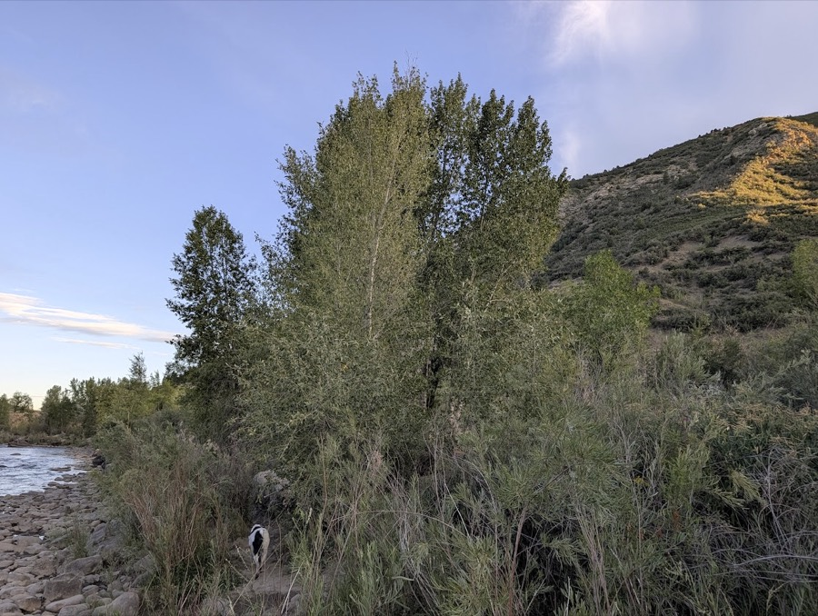
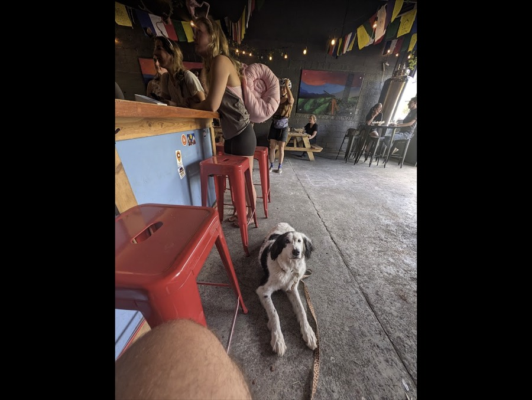
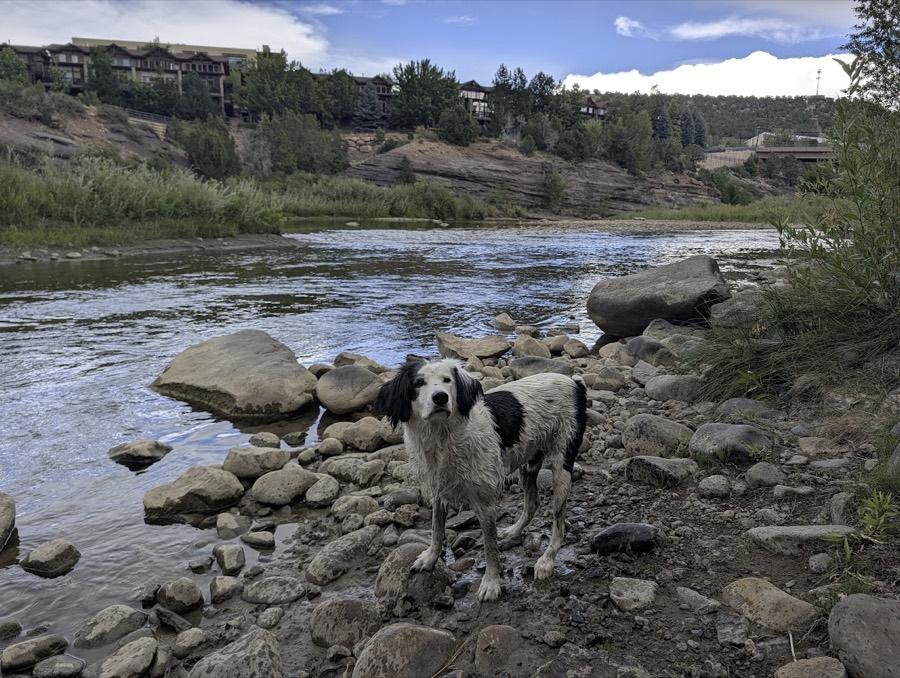

Sat 15 Aug – Sat 5 Sep · 1,054 miles from Durango on · dog aboard
Three days in, three and a half spent based in Steamboat, then the way back south splits over two shorter days instead of one long push. You lose 6,400 feet between Molas Pass and Grand Junction on the way up, cross Rabbit Ears and Fremont on the way to a Buena Vista layover, then Wolf Creek Pass down to a show in Pagosa Springs — with a bed waiting at the other end this time. A longer-than-planned stretch back in Durango, then one more drive south to Santa Fe for a free Cactus Lee set — what happens after that show isn't decided yet.
Roughly to real geography, not to scale · tap a stop to jump there
This guide always started cold at "Leave Durango," like the trip began there. It didn't — six nights in Durango, bookended by a drive in, are the real prologue. Lodging from hotel bookings; every day below reconstructed from geotagged photos, matching each one's GPS against the actual venue rather than guessed from memory.
1616 Mabry Drive, Clovis, NM
One night, a waypoint on the drive in. Nothing else about this leg — the route in, why Clovis — is recorded.
125 Mercury Village Drive, Durango, CO 81303
Six nights — the actual base for the week, checkout Friday morning before Silverton (see that stop below).
Near Santa Rita Park, 111 S Camino Del Rio
An evening walk along the river the day you rolled in — cottonwoods, evening light on the bluffs across the water. Reconstructed the same way as the rest of the week: matched the photo's GPS to the trail corridor, not pinned to one exact park entrance.

Aug 16, 7:43pm — from the actual photo this stop is sourced from
600 Main Ave Ste 210
Rooftop terrace, string lights, a set at dusk. Already saved in the family's own Google Maps favorites — this was reconstructed from a geotagged photo, not memory, and the favorite is independent confirmation it was a real, intentional stop. A black bear also turned up near a parking lot on camera the same day — no venue attached to that one, just a good story the photos told on their own.
1101 Main Ave
Dinner from a rice-bowl vendor inside 11th Street Station, Durango's food-truck park — Mexican, Island BBQ, Thai Peanut, Thai Chili Tofu, Shrimp Ceviche bowls on the chalkboard menu. Confirmed by reading the menu itself in the photo, then matching its GPS to the address.
225 E 8th Ave Unit C · 4.8★, 138 reviews
Prayer flags over the patio, punk-adjacent crowd, "animals welcome" by name in the reviews. Food from a Chalkboard Kitchen trailer. Confirmed by matching the photo's GPS to the venue's listed address — same city block, not a guess.

Aug 19, 6:40pm — the photo that confirmed this stop
La Posta Rd, along the Animas River · 4.4★
An afternoon of Rudy in the water over rocks, red bluffs across the river. Also already in the family's Maps favorites — the pattern with Balcony Bar suggests these weren't random stops, just unrecorded ones until now.

Aug 20, 4:05pm — the photo that confirmed this stop
The shortest day of the three and the only one with slack in it. Self check-in means no arrival window to hit, so the afternoon can run long — and the two lakes now bookend it.
Fill the tank here. Silverton's fuel is thin and expensive, and you won't want to think about it again until Rifle on Sunday.
Paved spur east off US-550, mile 18
Eighteen miles up and barely off the highway. Small, quiet, easy shoreline — the dog gets his swim before the day gets long, and you're back on the road in forty minutes.
48721 US-550, near Purgatory
26 miles up. Filet mignon sliders and garlic fries are what people order. Fire pits and a lot of outdoor seating — ask about the dog on the patio when you pull in. Kitchen stops at 8, so it's lunch or never.
Coal Bank Pass, on US-550
The lot is right at the top of the pass, so it costs no detour. Open wildflower meadows with Engineer's spire dead ahead. Walk as far as you feel like and turn around.
You're above treeline here and it's the exposed part of the day. Turn back early rather than pushing the meadow — nothing after this needs the light.
Greene St, Silverton
Codes are in hand and self check-in is live, so this is a drop-and-go rather than an appointment. No A/C at 9,300 feet is fine — the low is around 50° — but ask for a fan if the room is stuffy. Everything below is walkable from here.
Greene St, Silverton
The beer-first of Silverton's two. Reviewers rate the flights well above the food, and outdoor tables have umbrellas — one guest specifically mentions sitting out there with a dog. Hours weren't published, so check the door.
1227 Greene St
Brick-oven pizza, open till 9 — the only kitchen in town going past 8. Handlebars (taxidermy saloon) and Lacey Rose (piano player) both close at 8 if you want the room instead of the food.
Twenty minutes south, and on the way to the pass rather than a separate trip. Flat walk to still water — evening is when it goes glassy, which is the whole point of the reflection. 33mm. Little Molas is a mile further and quieter, but that spur is dirt.
Five minutes further up. Sun goes down around 7:50, looking east across Molas Lake to the Grenadiers. This is the 23mm frame of the trip. Back in town by 8:20; Alpine Tavern is open till 10.
The only real driving day, and it's front-loaded — the hardest 23 miles are behind you by nine. After Montrose it flattens into highway, and you drop 4,000 feet, so expect it 20° warmer when you arrive.
Check COtrip before you load the car. Construction signals run 24/7 with delays up to 20 minutes, and you can't stop inside the work zones. Morning light on the red slopes at Ironton; Crystal Lake and Bear Creek Falls are the reliable pullouts, both on the Ouray side.
From the visitor center up to Cascade Falls and back, about 90 minutes — don't attempt the full six-mile loop on a driving day. Box Canyon is on the way. Close-in subjects; this is the 33mm's morning.
The Smokehouse at Ouray Riverside opens at 9 and puts a water bowl on the table. Ouray Brewery's rooftop opens at 11 if you'd rather have the view. Don't stop in Ridgway — Colorado Boy doesn't open till 2 on Saturdays.
846 E Main St, Montrose
Opens at 11, covered dog-friendly patio, and it lands exactly when you'll want lunch. If one brewery is going to be the event of the day, make it this one — the afternoon is all interstate.
61 miles on US-50, then 88 on the interstate. Roughly 2h45 of steady, unremarkable road. Lowest point of the whole trip and the hottest part of the day.
Exit Rifle, north on CO-325
Seventy feet of triple falls over travertine, fifty yards from the car, with limestone caves behind them. Deeply green and mossy — it rewards a slow shutter, so bring something to brace against. Rain improves it.
Fifteen minutes back down the same road, so it costs you nothing. Quiet reservoir, shade, easy water access. Last swim of the trip.
502 W Main St, New Castle · 970-309-8830
Contactless check-in from 4pm. Bring cash for the pet fee, and make sure the room isn't Merlin's Bunkhouse — that one doesn't take dogs. A/C throughout, full kitchens, 88 Grill downstairs.
589 W Main St · two blocks
4.8 across 158 reviews, built into a restored 1952 Texaco station, dog patio, BBQ truck next door, open till 9. The car stays parked.
Casey Brewing Taproom, 711 Grand Ave, Glenwood — barrel-aged farmhouse ales and sours, the best beer on this route, open till 9 and they let you bring food in. It's 20 minutes east and a drive back on I-70, so decide before the first pour.
A Glenwood Springs morning bolted onto the front of what was otherwise the easiest driving day of the trip — brunch, a real hike, and the best beer on the route, all within fifteen minutes of the room. Still nothing to eat between Rifle and Craig, so eat before you leave.
729 Grand Ave, Glenwood Springs · Sun 8am–1pm
Real brunch, not a burrito-and-go — eggs benedict, avocado toast, a proper coffee bar. Reported dog-friendly on the patio; worth a quick check at the door if it matters which table you get.
100 Wulfsohn Rd, behind the Community Center
1.5 miles, easy, and the parking lot is paved city street the whole way in — no gravel spur like some of the other Glenwood-area trails. Enough to stretch legs without turning the morning into a hike day.
711 Grand Ave · opens 11am Sunday
Barrel-aged farmhouse ales and sours — this was flagged as an optional 20-minute detour back on Saturday night. Sunday morning, it's not a detour at all, it's just the third stop.
New Castle sits right on I-70 between here and Rifle — you'll pass it, not detour to it. Fill the tank in Rifle. CO-13 runs 88 miles to Craig through open country with essentially no services and patchy cell.
About 1h40 over the Danforth Hills. Empty two-lane, fence lines, big sky.
42 miles east on US-40, about 45 minutes. Later than the original plan, but check-in has no fixed time and the evening's still wide open.
No driving days left — the car stays parked except for errands. Three days, one town, dog off-leash more than he's been all trip. The pattern: a real hike in the morning while it's cool, water in the afternoon, a patio in the evening. Checkout is Thursday morning — this isn't a four-night stay.
Fish Creek Falls Rd, east end of town · lot opens 6am, parking fee
A paved, ADA-grade path from the upper lot down to the lower bridge and the falls — ten minutes, no real elevation lost or gained. Leash required the whole way; one source claims off-leash past the first quarter-mile but the official line is leash throughout, so don't test it. Go before 10 — the lot is small and this is the town's single most-visited trail.
The trail continues to the upper falls, 5 miles round trip and a real climb. Fine for a person, ambitious for an afternoon with a dog and a 9am start elsewhere.
No fixed stop here on purpose — this is the walk-and-see afternoon. MTN Culture Coffee for a mid-morning cup, whatever storefront looks good for lunch. First look at the town without a schedule attached to it.
2200 Village Inn Ct, Steamboat Square
Live music most evenings, 5:30–8pm, cozy outdoor seating by an open fire. Base-area bistro rather than a brewery — a different register to open the week on.
Storm Peak Brewing, 1885 Elk River Plaza, open daily 11am–10pm — the only spot this week with an indoor dog option, not just a patio.
Blackmer Trailhead, Woodchuck Rd
3.8 miles out and back, moderate, about two hours with stops. Leash required — Steamboat's city council closed this to off-leash dogs in 2019 on a Colorado Parks & Wildlife recommendation, so ignore anything online that says otherwise. Switchbacks up through aspen to open views over the Yampa Valley.
Yampa River, next to Bud Werner Memorial Library
By late August the runoff's long gone and the river slows into a real swimming hole right downtown. No detour required — it's a five-minute walk from lunch.
910 Yampa St · Tue–Thu 3–8pm
Right on the river. Patio only for the dog — no indoor exception here, unlike Storm Peak — so this is the fair-weather pick.
Trailhead at Maple Ave & Amethyst Dr
The trail itself is leashed and wide, but a half-mile in there's an actual off-leash dog park built around a pond — the closest thing to a free-run swim this week has. Easy 5-mile trail if you keep walking past it, or turn it into a twenty-minute out-and-back for the swim alone.
635 S Lincoln Ave · 7am–5pm daily
Deli sandwiches, good for a picnic back at the pond or on a bench downtown. Confirmed dog-friendly outdoor seating.
2090 Snow Bowl Plz · patio opens 3pm, music ~6:30pm, free
Float Like a Buffalo plays Aug 26. Snow Bowl runs a dedicated dog-friendly outdoor turf area — the "Dog Bowl," water and waste stations included — plus twelve bowling lanes and arcade games indoors if the weather doesn't cooperate.
Butcherknife Brewing, 2875 Elk River Rd, dog patio. Confirmed open.
Checkout day, but a short one — Buena Vista is barely half the distance of the old one-shot Friday push, which is the whole point of splitting it. Same first two passes as the original plan (Rabbit Ears, then Fremont), just stopping well short of Wolf Creek.
No rush this morning — the whole drive is under three hours. Fuel before leaving town; nothing meaningful until Buena Vista.
US-40 east, CO-9 south through Kremmling, CO-91 south over Fremont Pass. Construction-free as of the Aug 21 precheck — worth a fresh COtrip look the morning of, same as always.
CO-82 west from US-24, ~6 miles, paved the whole way
A short, fully paved spur off the highway just past Leadville — CDOT resurfaced this exact stretch recently — to a still lake with the Sawatch Range behind it. Ten minutes out of the way and the last real scenery before Buena Vista.
530 N US-24, Buena Vista
Early check-in likely given the light drive. Rest of the afternoon is open — South Main's riverfront area is an easy dog walk along the Arkansas if legs want it.
412 E Main St · Mon–Sat 4–10pm
Craft beer and whiskey in Buena Vista's old town jailhouse — a dozen taps, 100+ bottles. Dog-friendly both indoors and out, so no need to trade off who's on leash duty tonight.
One-way this time — Motel SOCO is the bed again, not just the show. Buena Vista to Pagosa is 159 miles, ~2h50, one pass (Wolf Creek). Shorter and lower-stakes than the old single-day 317-mile push from Steamboat, with real slack before a fixed-time show instead of none.
US-24/US-285 south through Poncha Springs, then the San Luis Valley — flat, open, about ninety minutes before the road starts climbing again. Fuel in Poncha Springs; nothing meaningful again until South Fork.
US-160 west out of South Fork. A USFS picnic area with restrooms sits right off the highway at the summit — paved the whole way in, unlike the gravel-approach overlooks lower on the pass, which aren't worth the detour. The eastside tunnel is closed for maintenance through early October — traffic is on a signed, paved bypass 24/7, 25mph work zone, brief intermittent delays. Budget a few extra minutes each way, since you're crossing it twice today.
651 W US Hwy 160, Pagosa Springs · 970-264-1492
Pet fee $30/night for one dog, $50 for two — any size. Dogs are welcome across the whole 4-acre property and in the lounge common areas, not just the room. Real slack before the show — settle in, dinner downtown or on-site, whatever the dog needs after two-plus hours in the car.
Motel SOCO, same address
Mike Dillon with Kris Myers and Brian Haas. Working assumption is a 7pm set. Dogs are fine on the property; whether he's in the room for the set itself is a call to make once you're there. No drive after — you're already home for the night.
Pagosa Springs back to Durango on US-160 W, with two real photo stops on the way, then a longer stay than originally planned — through Wednesday night, to line up with the Santa Fe leg below. Only the first night is actually booked; see the watch list for the gap.
Two Chicks and a Hippie, 135 Country Center Dr · (970) 731-6020 · 6:30am–2pm
Bakery/breakfast spot with a van mural on the wall — likely what "2 Hippies and a Truck" was pointing at, but the name doesn't match anything findable, so worth a gut-check that this is the right place before you drive there.
~17 miles west of Pagosa, via CO-151 S — a short paved detour off 160. The twin spires of Chimney Rock National Monument are visible and photographable from CO-151 and the visitor-center parking area without going past the gate. Dogs aren't allowed on the interpretive trails inside (there's a shaded kennel at the visitor center if you wanted to go further in) — this is a from-the-car/parking-lot stop, not a hike.
Back on US-160 W, past the CO-151 junction — a real paved mountain pass through San Juan National Forest, roughly mile point 115.6. Mountain views both directions, worth a quick pull-off. (Corrects what this guide said before: this route isn't pass-free — Yellowjacket is smaller than Wolf Creek or Red Mountain, but it's a genuine pass.)
3255 Main Ave, Durango, CO 81301 · (970) 247-5200
Confirmation #91458EE045225 — 1 King Bed, Deluxe Suite, non-smoking. Check-in 3pm, checkout 11am. $20/pet/night, up to 2 pets. $157 for the stay
Two things to sort out on arrival: the confirmation email says one night, checkout Sunday Aug 30 — but the calendar event Google auto-created from that same email shows the stay running through Monday Aug 31. Worth a quick call to the front desk to confirm which is right before you make other plans. Also worth knowing going in: this one runs 2.7★ on Google (483 reviews), with specific complaints about a broken bathroom outlet and a room that looked broken into. Already booked and paid for — just worth a look at the room before you unload the car.
125 Mercury Village Drive, Durango, CO 81303 · (970) 259-8400
Confirmation #88884EE060328 — the same hotel as the original Aug 16–21 week. Check-in Sun Aug 30 3pm, checkout Wed Sep 2 11am, 3 nights, 1 King Bed Deluxe Suite. $562.34 for the stay. Wednesday gap Santa Fe check-in isn't until Thursday 3pm — that leaves Wednesday afternoon and night unaccounted for, after this checkout and before Santa Fe. Worth deciding: a slow Wednesday in Durango plus a late Thursday-morning departure, or somewhere to land Wednesday night on the way down.
Everything from the original Durango week (Balcony Bar & Grill, Avalanche Bowl Co, 11th Street Station, Anarchy Brewing) is already covered — these are new, for the extra nights:
Taste Coffee House — 1101 Main Ave · dog-friendly patio overlooking Main
Carver Brewing Co. — 1022 Main Ave · Durango's original brewpub, patio seating
US-160, near Bayfield · 37.226597, -107.695009 · ~25min from Durango
If Wednesday ends up another night here rather than an early Santa Fe departure: real work-from-the-car option on BLM/San Juan NF land, halfway between Durango and Pagosa. Gravel access road, rough in sections but manageable for a regular car — this is the one exception to paved-only, agreed Aug 31, since it's parking to work rather than driving anywhere rough. Reviews report 3–4 bars Verizon, 4G/5G AT&T, usable T-Mobile — genuinely good, not just "one bar and hope."
Added Aug 26: Cactus Lee is touring through the Southwest that week — Lubbock (534mi, crosses into Central time), Trinidad (258mi), and Santa Fe (212mi) were all on the table; Santa Fe won on distance without giving up the show. Lodging ended up being La Quinta (booked Aug 31 with points), not El Rey Court — El Rey Court is still where the show is, just a short drive from the room instead of the same address.
US-160 E and US-84 E, 212 miles, about 3h57 — stays in Mountain time the whole way, unlike the Lubbock option. Heads up: the first stretch backtracks through Bayfield and Pagosa Springs, the same ground as the drive in on Aug 29 — nothing new until the US-84 turn south of Pagosa.
Rio Chama Espresso, Chama, NM — 614 Terrace Ave, dog-friendly coffeehouse with outdoor tables, right after the state line. Cafe Abiquiu, at the Abiquiu Inn — dog-friendly patio, open 7am–9pm, roughly the midpoint of the New Mexico stretch.
Echo Amphitheater CampgroundGood signal — Carson National Forest, US-84, 17mi northwest of Abiquiu. A real developed USFS campground right off the highway (not a forest-road detour), electric hookups, picnic tables, set against a dramatic red-rock amphitheater. Reports: good T-Mobile, workable Verizon (1–2 bars, better with a booster). A legitimate work-from-here stop if the day starts in Durango and ends in Santa Fe with hours to spare in between.
4298 Cerrillos Road, Santa Fe, NM 87507 · (505) 471-1142
Confirmation #89036EE103534 — booked with points, Free Night rate (30,000 Wyndham Rewards points, $0 cash). Check-in Thu Sep 3 3pm. 2 Double Beds. Checkout date unclear The confirmation email says 2 nights, checkout Saturday Sep 5 — the same pattern as the Baymont booking, the calendar event Google built from this same email shows 3 nights, checkout Sunday Sep 6. Confirm at check-in, same as the Baymont question.
Iconik Coffee Roasters (Red) — 1366 Cerrillos Rd · about 10min from the room
Rowley Farmhouse Ales — 1405 Maclovia St · dogs welcome inside and on the patio, water bowls out
El Rey Court, 1862 Cerrillos Rd · 3.5 miles / 11min from the room
6–10pm, free, confirmed directly on El Rey Court's own events page. Outdoor lawn show, short drive from where you're actually staying now (not on-site like the original plan). This exact listing doesn't state a dog policy, but every other lawn event the hotel runs (their High Road Music Festival, monthly Summer Sundays) explicitly welcomes leashed dogs, and their on-site bar is dog-friendly too — same lawn, same pattern. Good bet, not a guarantee.
Check COtrip Saturday morning. It's the one link with no easy substitute — if it's closed, the detour runs back through Durango, Cortez and Dolores and adds about three hours. Heavy rain on the burn scar above the highway is what closes it.
Durango before you leave Friday. Rifle before you turn north Sunday. Those are the two that matter.
The Ore House pet fee is cash at check-in, and check-in is contactless — so there's no front desk to sort it out at 6pm. Call ahead.
Friday around 40% in the San Juans, Saturday up to 65% in the Colorado valley, Sunday 30–45%. Afternoon cells, mostly. Rifle Falls is better in rain; Harvey Gap isn't.
Silverton sits at 9,318 feet and most budget rooms have no A/C. Fine at a 50° low, but the first night at altitude after a week in Durango is usually the one that sleeps badly.
Mountain towns close early. Silverton at 8 (Golden Block till 9), Meeker-sized towns at 8, Down Valley at 9. Plan dinner before the sunset drive, not after.
La Quinta Steamboat checks out Thursday morning, not Friday — the stay is 4 nights (Sun–Wed), not the 5 it might look like at a glance.
Highway conditions can change fast at 10,857 feet even in August. Check COtrip Friday morning same as Red Mountain the Saturday before. Also: the eastside tunnel (mile point 174) is closed for maintenance May–early October 2026 — traffic runs on a paved bypass 24/7, 25mph work zone, brief delays expected. The summit picnic area is still the only paved pull-off worth using.
Confirmed as Friday night's lodging again. Pet fee $30/night for one dog, $50 for two. Set time for the show is 7pm.
The calendar booking covers Thursday and Friday nights in Buena Vista — but Friday night is now Motel SOCO instead. Worth checking whether that second Super 8 night is still needed, or cancelling it.
Confirmation email says one night, checkout Sunday Aug 30 — the calendar event built from that same email shows two nights, checkout Monday Aug 31. Confirm at check-in.
Booked — La Quinta again, Sun–Wed, confirmation #88884EE060328.
Durango checkout is 11am Wed Sep 2, Santa Fe check-in isn't until 3pm Thu Sep 3 — nothing planned for the ~28 hours between. Decide before Wednesday.
Booked with points, confirmation #89036EE103534. Email says 2 nights, checkout Saturday Sep 5 — the calendar event from the same email shows 3 nights, checkout Sunday Sep 6. Same discrepancy pattern as the Baymont booking. Confirm at check-in.